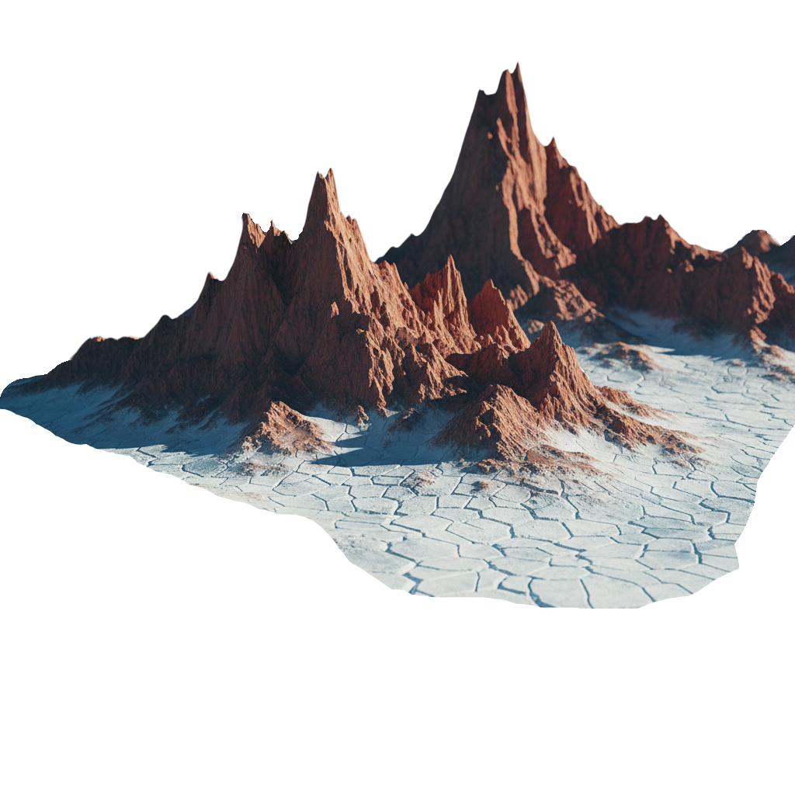
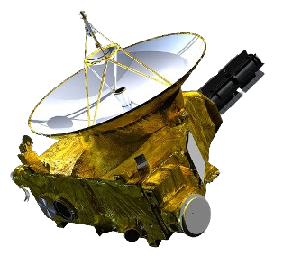

The Frozen World
Pluto is a dwarf planet located in the Kuiper Belt, beyond Neptune. Though smaller than Earth’s Moon, it has a complex surface with icy plains, mountains made of water ice, and regions covered in nitrogen and methane ice. Pluto has a thin atmosphere that expands when it approaches the Sun and freezes when it moves farther away. Its slow rotation makes a day last about 6.4 Earth days. It also has five known moons, with Charon being the largest, forming a binary system with Pluto. Despite its small size and distance, Pluto remains a fascinating world for understanding icy bodies at the edge of our Solar System.
 